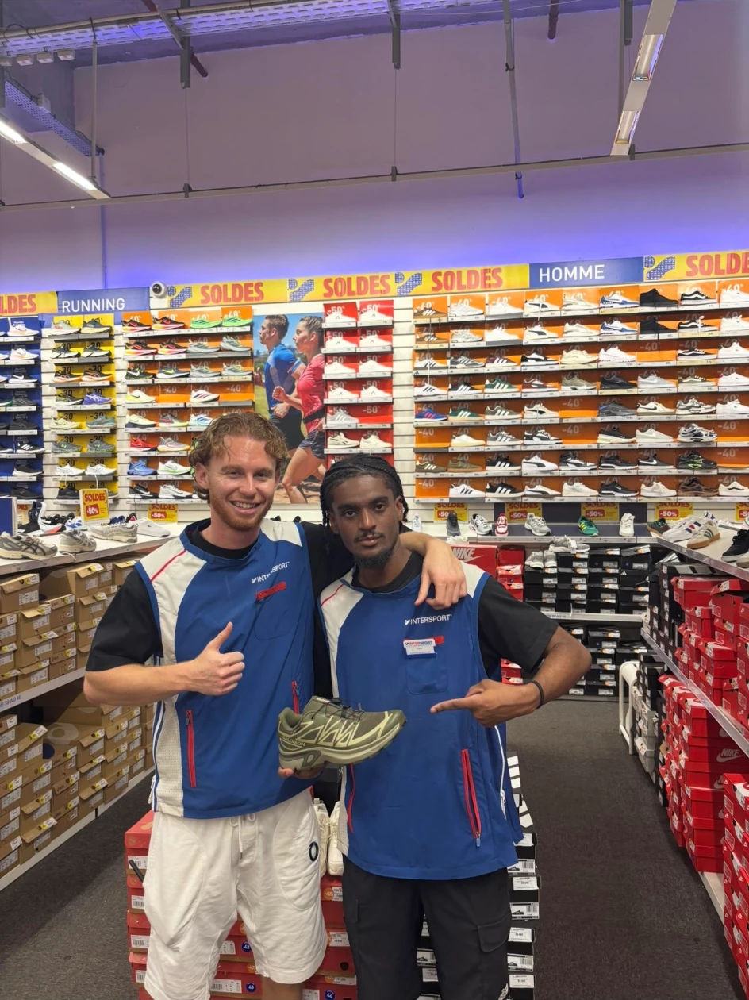
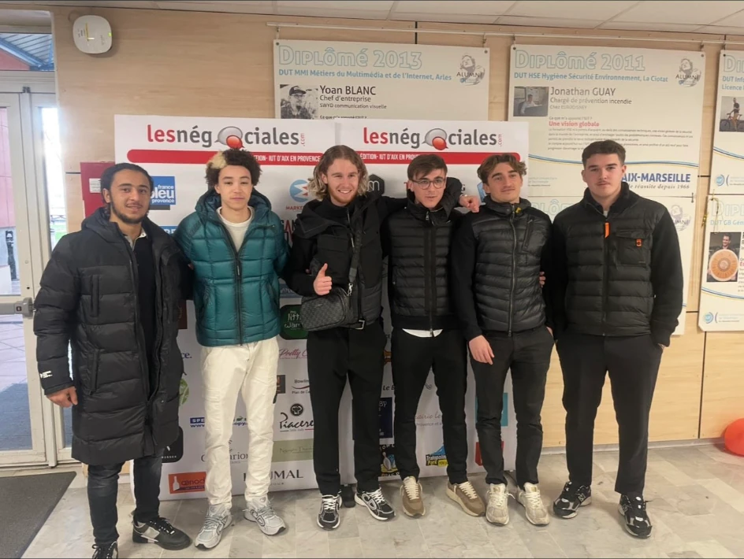
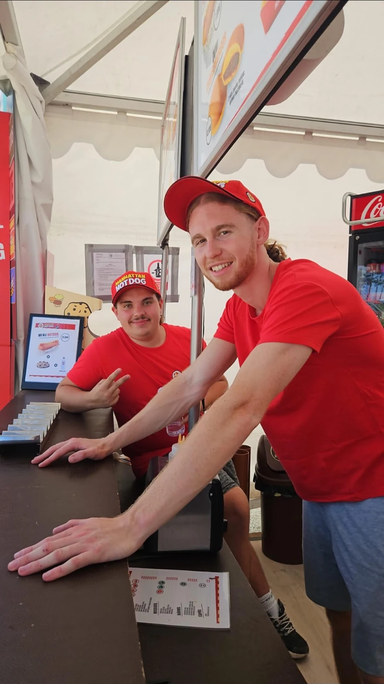
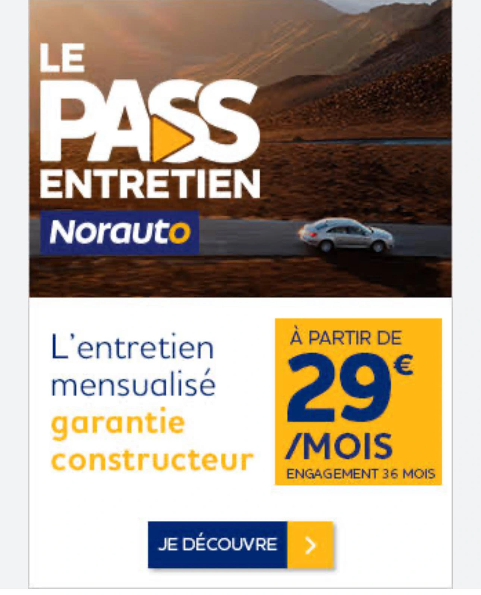

Accueil, découverte, argumentation, objections, conclusion et fidélisation structurent mes entretiens. Le conseil reste guidé par le besoin réel, même lorsqu’un produit moins cher est plus adapté.
Compétence 02 · Vente
Vendre une offre commerciale.
Écouter, comprendre, argumenter et accompagner le client jusqu’à une décision adaptée à ses besoins.
4 situations3 univers de vente1 concours national

Conseil · relation client · expertise produitLa compétence
La vente est un échange structuré : l’objectif n’est pas de pousser un produit, mais de construire la bonne réponse.
Les situations réelles chez Intersport et Manhattan Hot Dog, complétées par les Négociales et l’intervention Norauto, m’ont appris à adapter mon discours à des contraintes très différentes.

01Intersport · Alternance
Conseiller des profils sportifs très différents au rayon chaussures.
J’accueillais les clients, analysais leur pratique, leur fréquence d’utilisation, leurs attentes de confort et leur budget, puis présentais les produits les plus adaptés. L’entretien suivait les étapes de découverte, argumentation, traitement des objections, conclusion et fidélisation.
- Offre : running, lifestyle, football et multisports.
- Outils : GINKOIA, disponibilité des stocks, fiches produits et expertise terrain.
- Résultat : progression de mon aisance commerciale et amélioration de la satisfaction client.
- Axe de progrès : développer plus systématiquement la vente additionnelle pertinente.

02Formation · Négociales
Préparer, défendre et négocier une offre face à un interlocuteur exigeant.
Les exercices de BTS MCO et la participation aux Négociales m’ont permis de travailler la préparation, la découverte, l’argumentation, la réponse aux objections et la conclusion. La situation de concours ajoutait la gestion du stress et l’adaptation en temps limité.
- Rôle : commercial face à des clients fictifs et acheteurs professionnels.
- Résultat : amélioration de l’expression orale, de la persuasion et de la structure des entretiens.
- Apprentissage : un argumentaire solide part toujours d’une découverte précise.
- Limite : la simulation ne reproduit pas toutes les conséquences d’une vente réelle.

03Manhattan Hot Dog · Événementiel
Maintenir une relation client efficace sous forte pression.
Lors de grands événements nationaux, le temps consacré à chaque échange est court. Il faut identifier rapidement la demande, orienter le choix, prendre la commande, encaisser et maintenir une expérience positive malgré les files et le rythme.
- Contexte : plusieurs milliers de visiteurs et pics de fréquentation.
- Compétences : réactivité, clarté, gestion des flux et qualité de prise de congé.
- Résultat : contribution à un service fluide et à la satisfaction du public.
- Axe de progrès : utiliser les périodes plus calmes pour renforcer les ventes additionnelles.

04BUT TC · Intervention professionnelle
Vendre le Pass Entretien Norauto à un professionnel du secteur.
Après une préparation de l’offre, j’ai mené un entretien complet face à un professionnel jouant le rôle du client. J’ai identifié ses besoins, présenté les bénéfices de l’abonnement, traité ses objections et tenté de conclure.
- Offre : Pass Entretien Norauto.
- Apprentissage : personnaliser l’argumentaire et anticiper les objections.
- Résultat : exercice validé et amélioration de mes techniques de négociation.
- Axe de progrès : renforcer les arguments de conclusion.
Critères de démonstration
Une vente structurée, adaptée et responsable.
Les simulations m’ont amené à préparer des argumentaires, supports de vente et outils de présentation. Je dois encore gagner en autonomie sur les devis et documents contractuels.
Chez Intersport, le chiffre d’affaires, les ventes par catégorie et les résultats avant/après réimplantation permettent de relier la qualité du conseil à la performance du rayon.
La prospection n’était pas au cœur de mon alternance. Les cours m’ont néanmoins familiarisé avec la préparation de cibles, l’accroche et le suivi ; c’est un axe à développer en situation réelle.
Les Négociales m’ont confronté à des interlocuteurs utilisant objections, comparaison, pression sur le prix et demandes de concessions. J’ai appris à reformuler et à préserver la valeur de l’offre.
Prix, remises, panier moyen et données commerciales ont été mobilisés dans les exercices et le suivi du rayon. Je souhaite approfondir les calculs liés aux ventes complexes.
Vocabulaire sportif, connaissance des usages, posture de conseil et rapidité de service en événementiel : chaque univers impose ses propres codes.
Le discours, le rythme et la posture varient selon le client : sportif expert, acheteur occasionnel, interlocuteur professionnel ou public événementiel.
Bilan vente
Adapter la méthode sans perdre le sens du conseil.
Je maîtrise aujourd’hui la structure d’un entretien de vente, l’écoute active et l’adaptation du discours. Intersport m’a appris le conseil personnalisé, Manhattan Hot Dog l’efficacité sous pression, et les simulations m’ont permis de travailler l’argumentation face à des interlocuteurs exigeants. Mes axes de progression concernent la prospection réelle, les outils de vente complexe et la conclusion.